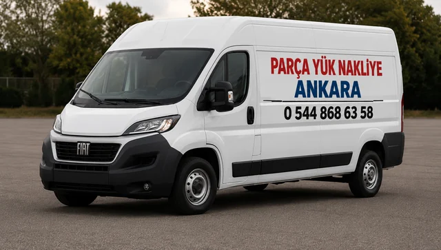
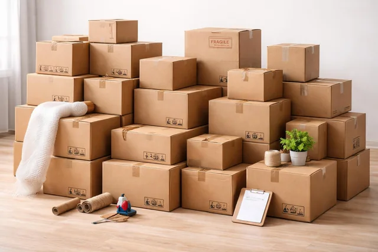
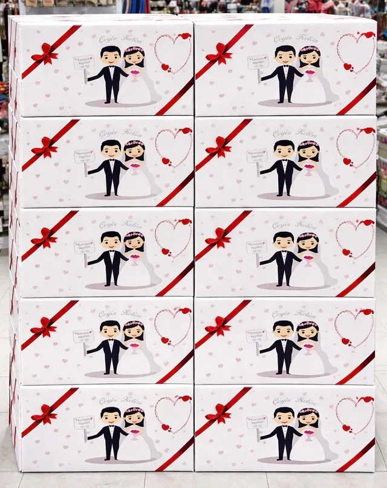
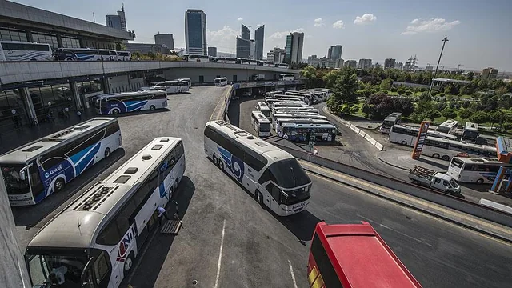

01
01Parça Eşya Taşıma
Tek parça, birkaç parça eşya, mobilya, koli ve kişisel eşyalar için ekonomik taşıma.
Hemen AraPanelvan araç ile parça eşya, 1+1 ev eşyası, ofis, mobilya, beyaz eşya ve şehirler arası yük taşıma. Konumunuzu paylaşın, hızlı teklif alın.

Yükünüze göre en doğru, hızlı ve ekonomik araç çözümünü sunuyoruz.
01Tek parça, birkaç parça eşya, mobilya, koli ve kişisel eşyalar için ekonomik taşıma.
Hemen Ara
02Parça koli, e-ticaret kolisi, depo ve mağaza çıkışlı ürünlerin düzenli teslimatı.
Hemen Ara
03 04
04Koltuk, masa, sandalye, bisiklet, spor ekipmanı ve özel parçaların taşınması.
Hemen Ara
05Havalimanı, AŞTİ, otogar ve Ankara içi teslimat ihtiyaçlarına hızlı çözüm.
Hemen AraNereden → Nereye • Yük nedir • Tarih / kat / asansör bilgisi

Parça yük ve az eşyalı taşımalarda büyük araç maliyetine girmeden, ihtiyaca uygun panelvan çözümü.
Randevu saatine uyum, planlı alım ve teslim.
Düzenli istif, hassas eşyaya dikkatli taşıma.
Ankara içi ve Ankara çıkışlı tüm illere taşıma.
Telefon ve WhatsApp üzerinden hızlı teklif.
Yüke ve güzergâha uygun, net fiyatlandırma.
Parça yük için hızlı ve ekonomik araç çözümü.
Gidiş ve dönüş yönünü seçin. Her hat için yük hazırlığı, adres bilgisi ve teklif ayrıntılarına ulaşın.
Düzenli hatlar için güncel sefer günü ve araç uygunluğu yükünüze göre teyit edilir. Diğer illerde alım ve teslim talepleri tarih ve adres bilgisiyle değerlendirilir.
Şehrinizi arayın; Bursa ve Eskişehir için hat bilgilerini inceleyin, diğer şehirler için arayıp teklif alın.
İlçenizi seçin ve parça eşya, 1+1 ev veya ofis taşıması için hemen iletişime geçin.
Farklı taşıma ihtiyaçlarında hızlı iletişim ve özenli teslimat deneyimi.
“Panelvan araçla geldiler, eşyalarımı hızlı ve dikkatli taşıdılar.”
“Koliler düzenli yerleştirildi, fiyat baştan net söylendi.”
“1+1 ev eşyam sorunsuz taşındı. İletişimleri çok iyiydi.”
“Ankara çıkışlı parça yük planlı şekilde teslim edildi.”
“Mobilyalar çizilmeden ve zamanında teslim edildi.”
“Havalimanından valiz ve eşyalarım adrese ulaştırıldı.”
Aradığınız cevabı bulamazsanız 7/24 telefon veya WhatsApp üzerinden ulaşabilirsiniz.
0544 868 63 58Parça eşya, 1+1 ev eşyası, ofis eşyası, koli, mobilya, beyaz eşya ve şehirler arası yük taşımaları için uygundur.
Evet, araç uygunluğuna göre 1 kişi refakat edebilir.
Evet. Esenboğa Havalimanı, AŞTİ, otogar ve Ankara içi teslimat hizmeti vardır.
Evet. Ankara çıkışlı il, ilçe, tarih ve yük bilgisine göre şehirler arası parça yük planlanır.
Nereden nereye, yükün içeriği, tarih/saat, kat/asansör bilgisi ve varsa yük fotoğrafı yeterlidir.
Form doğrudan WhatsApp'ı açar. Fotoğraf gönderirseniz daha net fiyat çıkar.